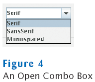

previous
|
start
|
next
Combo Boxes
For a large set of choices, use a combo box
Uses less space than radio buttons
"Combo": combination of a list and a text field
The text field displays the name of the current selection

previous
|
start
|
next